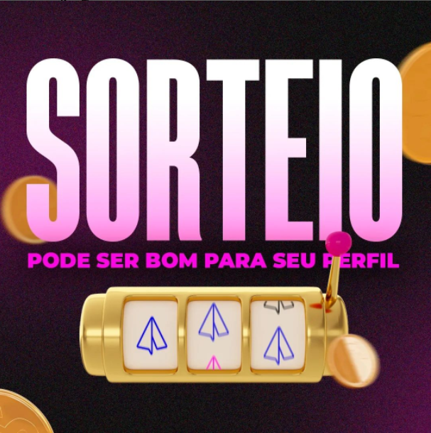
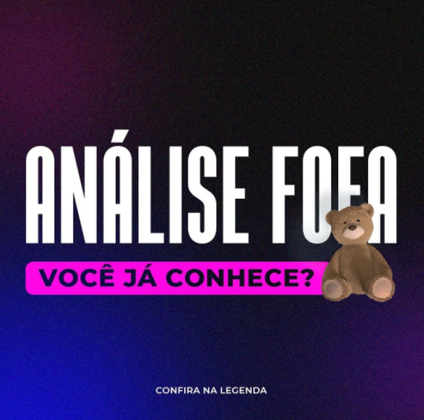

Agência Liget, empresa especializada em design e gerenciamento de redes socias.
PORTFÓLIO
ORÇAMENTO
CONTATO
Confira no Instagram como faço empresas crescerem!

"Sorteio acaba com seu perfil"
"nunca faça sorteios"
Já ouviu essas frases? Talvez até
de mim. A questão de sempre
falar sobre a parte ruim é por ser
muito mais fácil ser feito um
sorteio prejudicial do que benéfico,
o que torna mais delicado
recomendar fazer.
O que faria um sorteio bom?
[Clique para ver o post completo]
Muito se fala sobre sair da bolha,
da sua zona de conforto, mas,
o que isso pode significar na
criação de conteúdo?
[Clique para ver o post completo]

Não, não tem nada a ver com
fofura.
Esse tipo de análise FOFA
(Forças, Oportunidades,
Fraquezas e Ameaças), também
chamada de SWOT, é muito
conhecida no meio marketing.
Ela é usada para fazer uma
avaliação antes de tirar um
projeto dos planos e começar
a executá-lo.
[Clique para ver o post completo]
Portfólio + Behance
Identidade Visual - DaVila
Clique aqui para ver o projeto!
Social Media - Odontologia
Clique aqui para ver o projeto!
Identidade Visual - Logos
Contabilidade
Clique aqui para ver o projeto!
Identidade Visual - Cariocas
Hair
Clique aqui para ver o projeto!
Social Media - Pizzaria
Clique aqui para ver o projeto!